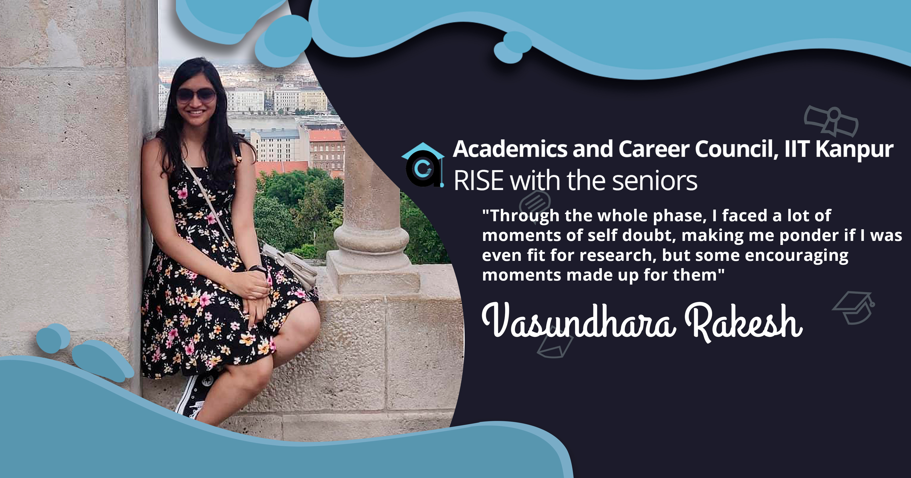
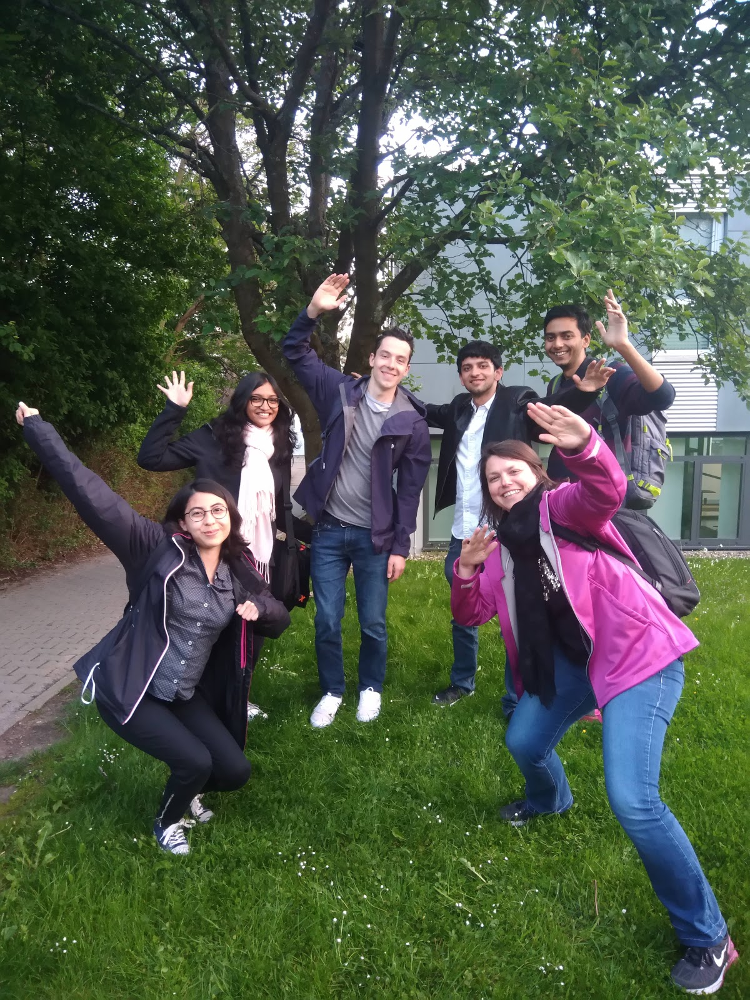
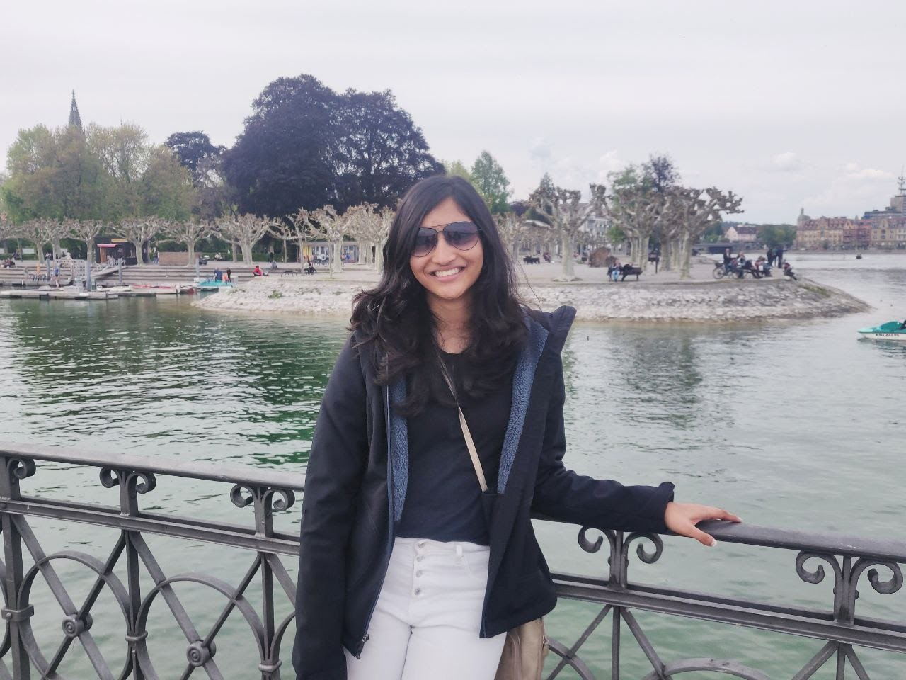
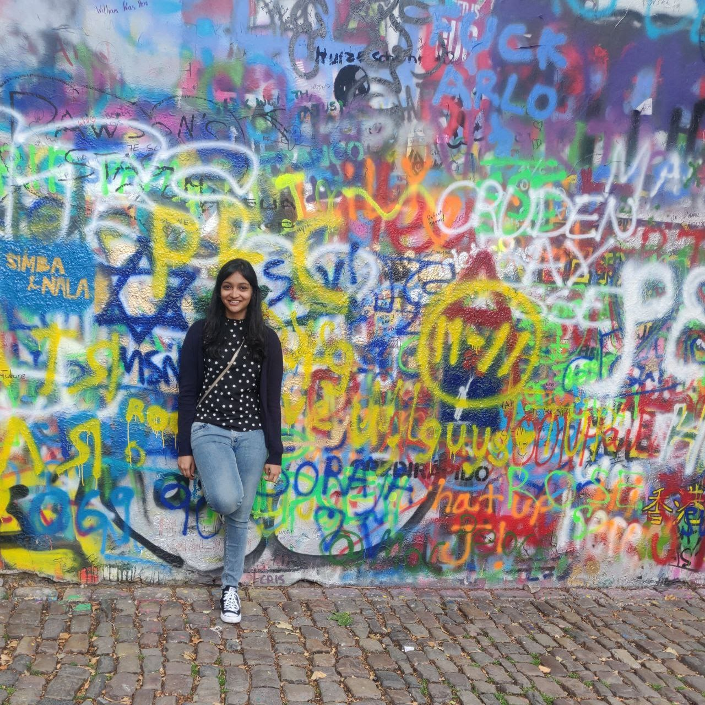
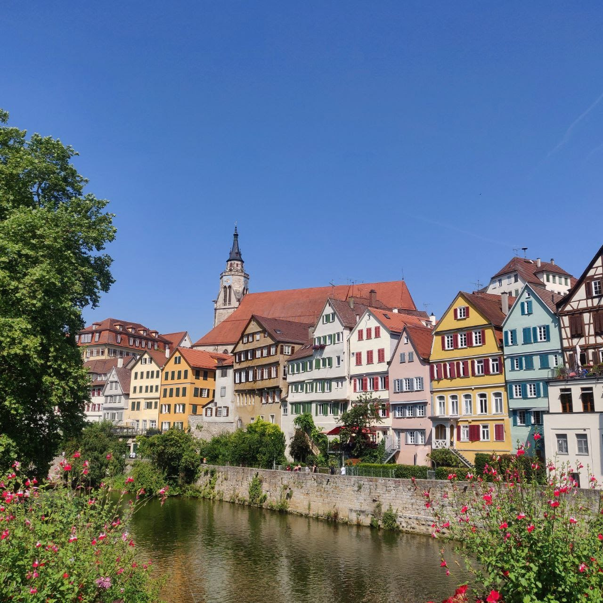

Sehnsucht | Vasundhara Rakesh
May 12, 2020
With the world coming to a stand still, I’ve come to appreciate sehnsucht - a beautiful
German word which roughly translates to a deep feeling of longing for something that is
missing, like wanting to escape the present to the past or the future. Not knowing how
the upcoming summer will be, I find myself wishing I go back to the last summer, and
writing this piece was a great way to do that.
Before I start, I should point out that everyone’s experience is unique. For me,
it was a rollercoaster - I was very lucky most of the time, and many times I was
disappointed and disheartened too. I did learn a lot from the journey, though, and had a
wonderful time interning at the Max Planck Institute for Intelligent Systems in
Tübingen, Germany.

The Application
Being a double major student, I was extremely confused whether or not to sit for the SPO
Internship process in my 5th semester. My first project had resulted in a couple of
publications, and as a 2nd year student, I was invited to present my work at international
conferences. This allowed me to learn about the latest developments on problems that
intrigued me, and gave me the opportunity to interact with a lot of very interesting people.
So, when the mail regarding the SPO registration for internships came in , I decided against
it, and chose to focus on pursuing a research internship. I was fairly happy with my choice
at the time, because when everyone else was doing mock GDs and running around arranging
formals, I got to chill. But in a month’s time, others already knew what they’d be doing the
next summer and I hadn’t even started applying, it started getting really stressful.
Applying for a research internship was a perplexing task. I started with looking at
the various scholarship programs available, like EPFL, DAAD, MITACS, SN Bose, Khorana,
Viterbi and many summer research programs hosted by individual universities. However,
working in a very interdisciplinary field, I was unable to find any program which offered
projects that aligned well with my interests. The research programs of universities,
especially those in the US, are also largely restricted to students who study in the US. So
I had to rely on sending out emails to professors. This approach had its own issues, because
I would read an interesting paper and think I should email those professors showing interest
to work with them, but while reading the work that their paper cited, I’d come across new
authors and so on and on it went. Suffice it to say that by September, I had about 80 tabs
open on my browser at any given time, each for a different, fascinating lab.

I read about the work a group was doing and tried to figure out how their work
aligned with what I thought my interests were, and how my skills could be useful for their
projects. Initially, writing a single email took 2-3 hours of work, since I tried to go
through a couple of recent papers of each professor before writing to them, and also figure
out which of their projects I might fit in best with. Over time, as I became familiar with a
wider body of research, understood my interests better and got used to reading papers, this
process became marginally less time consuming. I also developed a better notion about the
specific types of problems I would want to work upon, and what additional skills I require
to do meaningful work.
Over the semester, I sent a lot of emails. Some professors never got back to me. Some
said that it was too early to know their plans for summer, and that I should write to them a
little later. Some liked my work, but didn’t take interns. Some took interns, but had no
funding. Some took interns and had funding, but couldn’t sponsor visas for international
students. Through the whole phase, I faced a lot of moments of self doubt, making me ponder
if I was even fit for research, and some encouraging instances where researchers I really
look up to were appreciative of my work and suggested I apply to their labs for graduate
school. I also kept trying to pick up new skills via online courses during this time.
Finally, in February, I got an invite from the Rationality Enhancement Group at the Max
Planck Institute for Intelligent Systems (MPI-IS) for a (funded!) summer internship.
German bureaucracy is famously meticulous (read: slow), and adding IITK bureaucracy
to that meant that arranging all the paperwork was nearly as frustrating as the “apping”
process itself. Since Tübingen is primarily a university town, finding accommodation is also
usually tough, but I was able to find a really nice apartment which was close to the
institute. Once all the paperwork was done, the Visa process also smoothly done, soon I was
off to Germany!
The Experience
I was part of a team of three students working on Metacognitive Reinforcement Learning, and
supervised by the PI of the group. A typical research intern’s timeline starts with learning
about the lab and understanding their project for the first few weeks, working on it through
the bulk of the internship, and spending their final weeks trying to connect the various
things they’ve worked on to provide a conclusive end to their project. My experience was a
little different. We had a deadline for a conference in 6 weeks from the day I joined, which
meant that I had to hit the ground running. I won’t go into the specifics of what I did,
since everyone has a unique research problem. Like most research, however, my work involved
surveying a lot of literature, in addition to understanding and adding to a large repository
of code which had been developed over a year, coming up with neuroscientifically-grounded
hypotheses about what would explain participants’ behaviour in our experiment, and
validating it with the that data we had. 
The first half of my internship was a mad rush to try and make a meaningful
contribution to the paper. Working with a larger team on a project was an important
experience for me, and one I had not had before. Discussing ideas with other students who
are equally invested and excited about the same problem as you is not only very productive,
but also very fun. Once the deadline was over, I got to explore the ideas that I had had
earlier, but couldn’t build upon, in greater depth and also consider new approaches to the
problem. On the last day of my internship, I found out that our paper had been accepted,
which was a splendid note to end on.
The Rationality Enhancement Group was only about a year old when I joined it, and as
such, it was a small group of people who came from related yet very diverse fields. I really
liked this, since it allowed all of the lab members to interact extensively and have a good
understanding of each others’ work. I learnt as much in our weekly lab meetings as I did in
the rest of the week, and some really great ideas for our work came from other members of
the lab. The non-work discussions over lunch were also very enriching, and allowed me to
learn about a host of different cultures and different experiences in academia. We also had
a couple of fun lab visits - one to the lab of the Autonomous Motion Department, where we
got to interact with some really cool robots, and one to the Tübingen observatory, where we
learnt a little about and marvelled a lot at stars.
MPI was a very interesting place to work at. A really unique aspect of MPI was that
the researchers were not all professors, which allowed them to spend a lot more time
interacting with their labs and engaging with the research. The Max Planck Society has about
80 institutes across the world, and 3 of them are in the Tübingen campus. This meant that I
got to attend some very insightful talks in a lot of very different fields. There was also a
weekly Friday beer hang out for all members of the institute, where I got to meet even more
people (although the conversation was less about the work and more about how conference
deadlines are stressful and what places need to be visited in upcoming conferences). MPI
Tübingen also hosted a summer festival during the time I was there, with a fascinating tour
of the rare flora on campus, music, barbecue, a human foosball tournament, and an appearance
by an inflatable zebra.
Living in Tübingen and Travel!
We all try to visit the big, famous cities when we travel, but I’m really glad I had the
opportunity to live in a beautiful town like Tübingen. The Old Town was really nice to walk
around in while having an ice-cream on a Saturday and the river was very peaceful to look
at. Traveling around town was very easy via buses, but I preferred to walk to work as then I
got to encounter pretty flowers, mostly blue skies and lots of playful dogs. I also enjoyed
the company of my roommate, and we had some fun weekends making waffles, baking cakes,
watching the final season of Game of Thrones and enjoying the beautiful sunset from our
balcony.

Finally, you don’t go to Europe and not travel. I was lucky to be able to experience 5
countries (apart from Germany) during my 12 week stay, and as I write this, I feel like it
was too little. Nevertheless, the highlights for me were the waffles and chocolates of
Belgium, the Pride Parade and pizza in Milan, the Charles Bridge and beer in Prague, riding
the trams along the Danube in Budapest and a fun morning exploring Mannheim while waiting
for a delayed train.
My labmates were incredibly kind and brilliant people, and helped me a lot not only
with my project, but also with how to go about exploring academia. My mentor is one of the
most brilliant people I have worked with, and learning from his insightful and methodical
approach to research has helped me in everything I have done after coming back. Beyond work,
too, I learnt important things like how to cook and act out questions when people didn’t
understand English. I lived in a beautiful city, and made some wonderful friends. Looking
back, I could not have asked for more from one summer.
-Vasundhara Rakesh
-edited by Akshat Goyal